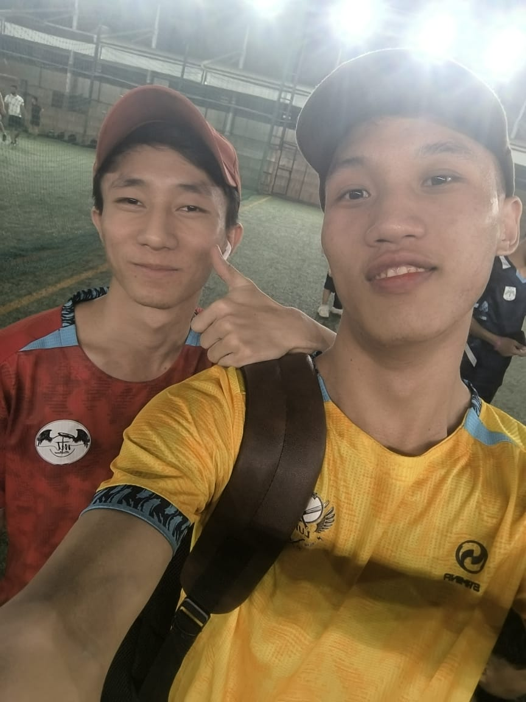

Web Developer | Front-End Enthusiast | Tech Lover
Hello! I'm Aung Ko Ko, a creative and detail-oriented web developer based in Yangon. I have a strong passion for front-end development and enjoy building responsive, user-friendly websites. With a solid foundation in HTML, CSS, and JavaScript, I strive to deliver clean and efficient code. I’m always learning and exploring new web technologies to stay updated.
A personal website to showcase my skills, projects, and contact information.
A web application that allows users to add, edit, and delete daily tasks efficiently.
A clean and modern blog template suitable for writers and content creators.
Email: aungaung@example.com
Phone: +95 9123456789